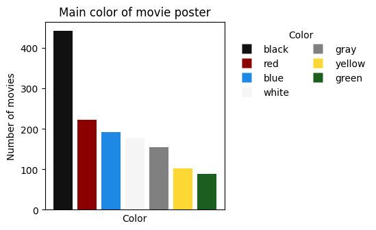
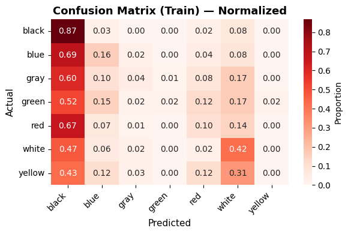

/// Julien Arsena
/// Julien Arsena
FR
/
EN
/// Julien Arsena

Les affiches de films jouent un rôle crucial dans le marketing cinématographique, façonnant souvent les attentes du public dès le premier regard. Ce projet a pour but de prédire la couleur dominante d'une affiche de film en se basant uniquement sur ses métadonnées (le genre, le budget, la langue d'origine, la longueur du titre et l'année de sortie). L'enjeu est de découvrir si des données purement factuelles, abstraites du visuel, dictent de manière mesurable l'identité visuelle et esthétique choisie par les studios.
L'analyse exploratoire a mis en évidence une sur-représentation notable du noir, du rouge et du bleu dans les affiches cinématographiques (Fig. 1). Les matrices de confusion ont ensuite permis de visualiser et de comparer précisément les prédictions face aux réalités du terrain.

Fig 1. Distribution de la variable cible (Couleur principale de l'affiche)

Fig 2. Matrice de confusion évaluant les prédictions du modèle de Régression Ridge
Le tableau comparatif ci-dessous synthétise la précision (Accuracy) des algorithmes testés. La régularisation Ridge s'est avérée être la plus robuste et la plus performante face à notre échantillon de données.
| Algorithme Évalué | Précision d'Entraînement | Précision de Test |
|---|---|---|
| Régression Logistique | 35.52% | 27.53% |
| Régression LASSO (L1) | 35.14% | 34.49% |
| Régression Ridge (L2) | 37.75% | 34.78% |
Tab 1. Résumé de la précision (Accuracy) par modèle de classification multiclasse.
Le modèle de régression Ridge atteint une précision de 34.78% sur les données de test, ce qui est très largement supérieur à une probabilité de hasard pur (environ 16% pour ces classes). Cela démontre mathématiquement que la machine est capable de deviner correctement la couleur dominante d'une affiche dans plus d'un cas sur trois, prouvant que des données purement administratives (budget, date, genre) dictent de manière mesurable l'esthétique finale d'un film.
Consultez mon rapport scientifique complet, explorez la base de données générée ou lisez mes scripts Python directement via les liens ci-dessous :